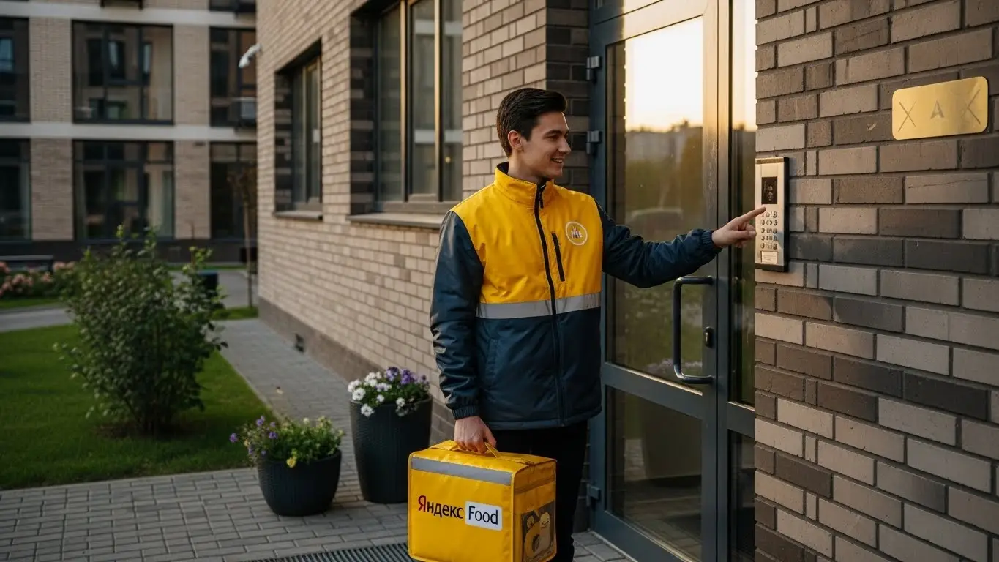
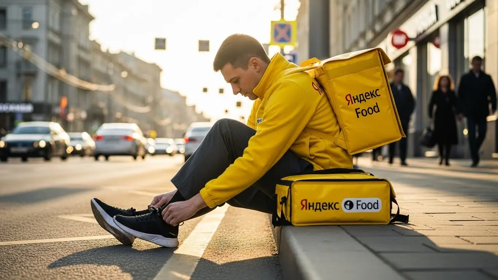

Зарплата курьера Яндекс Еда в Батайске 2025-2026: обзор условий

- Работа курьером Яндекс Еды в Батайске: для кого эта вакансия и что вы получите
- Сколько вы будете зарабатывать курьером в Батайске: калькулятор дохода и разбор выплат
- Реальный заработок курьера в Батайске: смены и месячный доход
- График работы и форматы занятости
- Требования к кандидату и документы
- Самозанятость, налоги и юридическая чистота
- Пошаговое оформление и первый выход на линию в Батайске
- Пешком, на вело или на авто: что выгоднее в Батайске
- Районы, маршруты и «топовые» зоны заказов в Батайске
- Безопасность, страховка, штрафы и оплата простоя
- Плюсы и возможные минусы работы курьером в Батайске
- Реальные истории и отзывы курьеров из Батайска
- Ответы на частые вопросы о работе курьером Яндекс Еды в Батайске
- Коротко о главном: шпаргалка для будущего курьера
- Заключение: твой следующий шаг
Все города
Здорово, будущий коллега! Думаешь, как бы подзаработать, и в голове крутится мысль: «А не пойти ли в курьеры»? Идея хорошая, но сразу возникает куча вопросов. Сколько реально останется в кармане после всех расходов, если работать на авто в Батайске? Не убьёшь ли ты свой велик или ноги, мотаясь из центра в Авиагородок и обратно? И как не застрять в вечной пробке на Энгельса в час пик, теряя и время, и деньги? Я здесь, чтобы рассказать тебе всю правду про работу курьером Яндекс Еды именно в нашем Батайске, без рекламной шелухи и пустых обещаний.
Пойми главное: рекламные баннеры, которые обещают золотые горы, — это одно, а реальная работа на улицах Батайска — совсем другое. Твой итоговый заработок зависит не только от твоего желания, но и от множества мелочей: от рейтинга в приложении Яндекс Про, от знания коротких путей в частном секторе Койсуга, от умения правильно выбрать слот и район. Чтобы сразу увидеть актуальные цифры, воспользоваться калькулятором и перейти к анкете, загляни на официальную страницу, где собраны все условия — работа курьером Яндекс Еда в Батайске. Большинство новичков сливаются в первый же месяц, потому что совершают одни и те же ошибки: катаются в «мёртвые» часы, тратят на бензин больше, чем зарабатывают, или просто не понимают, как работает система приоритетов.
В этом гиде мы не будем лить воду. Мы честно разберём, что выгоднее для Батайска — работать пешком, на велосипеде или на авто. Я покажу на реальных цифрах, сколько можно заработать за смену в будни и в выходные, и сколько уйдёт на налоги и расходы. Ты узнаешь, в каких районах города всегда есть заказы, а куда лучше не соваться, как погода влияет на доход и за что на самом деле прилетают штрафы. Мы даже сравним условия с другими службами доставки, которые есть у нас в городе.
Меня зовут Алексей. Я сам откатал не одну тысячу километров с жёлтым рюкзаком по всем районам Батайска, а сейчас держу свой небольшой таксопарк-партнёр и вижу всю эту кухню изнутри. Я знаю, где «рыбные» места, какие ошибки стоят дороже всего и как выжать из смены максимум. Так что устраивайся поудобнее, сейчас я всё разложу по полочкам.
Чтобы ты не запутался, вот короткий навигатор по статье, который поможет быстро найти ответы на главные вопросы.
Что ты точно узнаешь из этого разбора
В этой статье ты ТОЧНО узнаешь:
- Сколько реально можно заработать в Батайске за смену на велосипеде, пешком или на авто, и от чего зависит итоговая сумма?
- В каких районах Батайска больше всего заказов и как выбирать «фиолетовые зоны» в Яндекс Про, чтобы не кататься впустую?
- Как официально оформиться самозанятым за 10 минут и сколько на самом деле придётся платить налогов?
- За что могут снизить рейтинг или ограничить доступ к заказам и как работает страховка на смене?
- Что выгоднее для Батайска — работать пешком, на велосипеде или на своей машине, и какие у каждого способа есть подводные камни?
- Что такое «оплата простоя» и как она защищает твой доход, если заказов в смене оказалось мало?
А если тебе некогда читать всю статью — переходи сразу к заключению, где ты найдёшь короткие ответы на все эти вопросы и указания, в каких разделах искать подробности.
А для начала — вся суть работы в Батайске в одной картинке, чтобы ты сразу понял ключевые цифры.
Работа курьером в Батайске: ключевые цифры
Работа курьером Яндекс Еды в Батайске: для кого эта вакансия и что вы получите
Многие думают, что работа курьером — это что-то временное и только для студентов. На деле эта вакансия в Яндекс Еде подходит очень разным людям, особенно в таком городе, как Батайск, где важна мобильность и возможность быстро получить деньги. Здесь нет начальника в привычном понимании, сложных собеседований и строгих требований к образованию. Главное — твоё желание работать и наличие смартфона с приложением Яндекс Про.
Кому подойдёт эта работа в Батайске
Эта работа — конструктор, который каждый собирает под себя. Студенты могут выходить на пару часов после пар и зарабатывать на свои расходы, не отвлекаясь от учёбы. Если у тебя уже есть основная занятость, доставка станет отличной подработкой в выходные или по вечерам, чтобы закрыть кредит или накопить на что-то важное. Деньги приходят на карту ежедневно, так что результат виден сразу.
Для тех, у кого пока нет опыта, это идеальный старт. Не нужно резюме и рекомендаций, всему научат онлайн за пару часов. Курьеры на своем авто тоже найдут здесь выгоду: заказы есть не только в центре, но и на дальние расстояния, что часто выгоднее, чем просто таксовать. В общем, если тебе важен свободный график, ежедневные выплаты и ты не хочешь сидеть в офисе — это твой вариант.
Главные преимущества для жителей районов Северный, Восточный, Авиагородок
Одно из главных удобств — возможность работать прямо у себя в районе. Не нужно каждое утро ехать через весь Батайск на другой конец города. Живёшь в Северном жилом массиве (СЖМ)? Отлично, открываешь приложение Яндекс Про, выбираешь свою зону и начинаешь доставлять заказы из ближайших кафе и магазинов. То же самое касается жителей Восточного микрорайона или Авиагородка.
Это экономит время, деньги на проезд и нервы. Ты работаешь на знакомых улицах, знаешь все короткие пути. Система сама предлагает заказы рядом с тобой, так что холостых пробегов минимум. По сути, ты становишься главным по доставке в своём квартале, что удобно и для тебя, и для клиентов, которые получают еду быстрее.
Что по доходу и условиям
Давай по-честному: сколько можно заработать в Батайске? Цифры зависят от тебя. Если выходить на подработку на 3–4 часа в день, можно делать 1200–1800 рублей за смену. При полной занятости, работая по 8–10 часов, активные курьеры, особенно на авто, доводят месячный доход до 60 000 – 80 000 рублей. Это не потолок, а реальная зарплата для нашего города.
Ключевые условия работы просты и прозрачны. Во-первых, свободный график — ты сам решаешь, когда и сколько работать. Во-вторых, ежедневные выплаты — заработал сегодня, получил деньги на карту сегодня же или на следующий день. В-третьих, можно стать курьером без опыта — всему научат, а термосумку и форму выдадут. Для оформления достаточно статуса самозанятого, который получается онлайн за 10 минут.
Например, один из наших курьеров-студентов в Батайске, который живёт в районе Гайдара, выходит на 3-4 часа после занятий на велосипеде. Он доставляет заказы по своему району и соседним кварталам и спокойно делает по 1500 рублей за вечер. Этих денег ему хватает на личные расходы, и при этом он успевает и учиться, и с друзьями видеться.
В итоге, работа курьером в Батайске — отличный вариант для тех, кто ценит свободу и хочет видеть живые деньги каждый день. Она подходит и как основная занятость, и как подработка. Главный совет новичку: начни работать в своём районе. Так ты быстрее войдёшь в ритм и почувствуешь уверенность.
Сколько вы будете зарабатывать курьером в Батайске: калькулятор дохода и разбор выплат
Сразу скажем: здесь нет фиксированного оклада. Твой заработок — это сумма нескольких составляющих, и ты напрямую влияешь на итоговую цифру. В отличие от работы со стандартной ставкой, здесь чем активнее и умнее работаешь, тем больше получаешь. Давай разберём, из чего строится доход курьера Яндекс Еды.
Из чего складывается доход курьера
Твой заработок за смену формируется из нескольких частей, и важно понимать каждую.
- Оплата за заказ. Базовая сумма за то, что ты взял заказ в ресторане и отнёс клиенту.
- Доплата за расстояние. Чем дальше ехать или идти, тем больше доплата. Система считает каждый километр маршрута.
- Повышающие коэффициенты. В приложении Яндекс Про есть карта спроса. В часы пик (обед, ужин), в плохую погоду или в праздники некоторые зоны окрашиваются в яркие цвета. Это значит, что заказов много, а курьеров не хватает. Стоимость каждого заказа в такой зоне умножается на коэффициент, и заработать можно в 1,5–2 раза больше.
- Бонусы. Сервис часто даёт персональные цели. Например, «выполни 10 заказов за день и получи бонус 500 рублей». Это отличный стимул для активной работы.
- Чаевые. Все чаевые от клиентов через приложение — полностью твои. Сервис не берёт с них никакой комиссии.
- Оплата простоя. Это важная гарантия. Если ты вышел на запланированный слот, а заказов временно нет, Яндекс начисляет минимальную оплату за час твоего времени. Ты не останешься с нулём, даже если спрос временно упал.
Как пользоваться калькулятором дохода
Чтобы прикинуть свой возможный заработок, воспользуйся калькулятором на этой странице. Пользоваться им просто: сначала выбери свой тип доставки — пеший курьер, велокурьер или курьер на автомобиле. У каждого типа своя специфика и потенциальный доход.
Затем укажи, сколько часов в день и сколько дней в неделю ты планируешь выходить на смены. Например, 4 часа 5 дней в неделю или 8 часов 2 дня в неделю. На основе этих данных и средних показателей по Батайску калькулятор покажет примерный дневной и месячный доход. Помни, что это ориентир, а твой реальный заработок может быть и выше, если ловить пиковые часы и бонусы.
Рассчитайте свой примерный доход в Батайске
8 часов
5 дней
Ваш примерный доход в месяц:
Это ориентировочный расчёт на основе средней ставки в Батайске. Реальный доход может быть выше за счёт бонусов и повышенных коэффициентов в часы пик.
Чтобы увидеть более точные цифры и сразу перейти к анкете, загляни на официальную страницу, где есть все актуальные условия — работа курьером Яндекс Еда в твоём городе. Там же найдёшь ответы на другие вопросы и форму заявки.
Примеры расчёта для пешего, вело- и авто‑курьера в Батайске
Чтобы было понятнее, рассмотрим на конкретных примерах.
- Пеший курьер. Допустим, ты работаешь в центре Батайска, в районе улицы Кирова, где много кафе. За 4-часовую вечернюю смену можно выполнить 8–10 заказов на короткие расстояния. Средняя оплата за заказ с учётом небольшого расстояния — 150–180 рублей. Итог за смену: около 1200–1500 рублей.
- Велокурьер. Ты решил поработать в выходной день 6 часов, катаясь между спальными районами, например, Восточным и Северным. На велосипеде ты быстрее и можешь брать заказы на 2–3 км. За смену выполнишь 12–15 заказов. Средний доход за такой день составит 2000–2600 рублей.
- Автокурьер. Ты выходишь на полную 8-часовую смену, особенно в дождливую погоду. Можешь брать крупные и дальние заказы по всему городу и даже в пригород, например, в Койсуг. За день можно сделать 15–20 заказов, включая дорогие доставки из супермаркетов. Твой заработок за смену может составить 3500–4500 рублей. Из этой суммы нужно вычесть расходы на бензин, но всё равно остаётся очень прилично.
Есть хороший пример: один из наших водителей-курьеров поначалу просто выходил на линию, когда было свободное время, и зарабатывал средне. Я посоветовал ему следить за картой спроса в Яндекс Про. Он стал специально выезжать в пятницу вечером и в дождливые выходные, когда коэффициенты в городе максимальные. В итоге его заработок за смену вырос почти в полтора раза. Он тратит то же время, но получает больше, потому что работает с умом.
В общем, твой доход — не случайность, а результат твоих действий. Понимая, из чего он складывается, ты можешь им управлять. Наш совет: не бойся экспериментировать с графиком и районами, следи за бонусами в приложении и всегда старайся работать качественно, чтобы получать больше чаевых.
Реальный заработок курьера в Батайске: смены и месячный доход
Давай к главному — к деньгам. Без красивых обещаний, только цифры и факты о работе курьером в Батайске. Вопрос «сколько реально можно заработать» — самый частый, и на него нет одного ответа. Твоя зарплата в сервисах вроде Яндекс Еды и Доставки зависит от трёх вещей: на чём ты доставляешь, сколько часов на линии и насколько с головой подходишь к делу. Но вилки по доходу я тебе, конечно, дам.
Диапазон дохода для подработки и полной занятости
Если ищешь подработку на 2–4 часа в день, чтобы закрыть мелкие расходы или кредит, ориентируйся на следующие цифры. Пеший курьер в Батайске за такую короткую смену заработает 600–1200 рублей. Велокурьер за то же время привезёт уже 900–1600 рублей, потому что успеет выполнить больше заказов. Курьер на своем авто на подработке в пиковые часы может получить 1500–2500 рублей, уже за вычетом бензина. В месяц такая занятость приносит 15–30 тысяч пешим и до 50 тысяч водителям.
При полной занятости, когда ты на линии по 8–10 часов 5-6 дней в неделю, цифры совсем другие. Пеший курьер стабильно зарабатывает 45 000 – 60 000 рублей в месяц. Велокурьер, который не ленится крутить педали, может рассчитывать на 60 000 – 80 000 рублей. Самый высокий доход, конечно, у курьеров на своем авто: 80 000 – 120 000 рублей в месяц — это реальные условия работы в Батайске, если подходить к делу с умом и не отказываться от дальних заказов.
Как район, время суток и погода влияют на доход
Запомни три кита высокого заработка: место, время и погода. В Батайске больше всего заказов в центре — улицы Кирова, Куйбышева, Энгельса, а также в густонаселённых жилых массивах, например, в районе ВЖМ или в новых кварталах на юге города. Там сосредоточены кафе, рестораны и магазины, откуда люди постоянно заказывают еду и товары.
Время — твой главный союзник. Пики спроса — это обед (с 12:00 до 15:00) и ужин (с 18:00 до 22:00). В это время в приложении «Яндекс Про» карта города окрашивается в фиолетовый цвет — это зоны с повышенными коэффициентами и бонусами. Стоимость заказа, который днём оценивается в 150 рублей, вечером может вырасти до 250–300. Пятница, выходные, праздники и плохая погода — твои главные союзники. Как только начинается дождь, сильная жара или снег, многие курьеры уходят с линии, а количество заказов взлетает. Коэффициенты растут, а клиенты становятся щедрее на чаевые.
Советы по увеличению заработка от опытных курьеров
Чтобы не просто работать, а именно зарабатывать, слушай сюда. Во-первых, всегда планируй смены заранее через приложение. Бери плановые слоты в пиковые часы — так у тебя будет приоритет в распределении заказов. Во-вторых, не гоняйся за одним «фиолетовым» пятном на другом конце Батайска. Лучше выбери одну зону с постоянным спросом, например, центр, и работай там. Сэкономишь время и бензин, а заказов будет не меньше.
Используй свой транспорт с умом. Если ты на машине, не бойся брать заказы в отдалённые районы или даже в Койсуг — они обычно дороже. Но если видишь серию коротких заказов в центре, где много пробок, иногда выгоднее припарковаться и выполнить их пешком. Главное — постоянно анализировать карту спроса в «Яндекс Про» и не сидеть на месте в ожидании чуда. Движение — это деньги.
Из практики: у меня есть водитель-курьер, парень лет 30, работает на своей машине полный день. Поначалу он брал все заказы подряд и мотался по всему Батайску, в итоге много жёг бензина, а выхлоп был средний. Я ему посоветовал с утра работать по спальным районам (заказы из Яндекс Лавки и магазинов), к обеду смещаться в центр за заказами из ресторанов, а вечером снова возвращаться в жилые массивы, где люди заказывают ужин из Яндекс Еды. За месяц его чистый доход вырос почти на 20 тысяч, потому что он перестал делать «пустые» пробеги.
В общем, твой заработок курьером — это не лотерея, а результат правильной стратегии. Анализируй спрос, выбирай выгодные часы и не бойся плохой погоды. Мой совет: в первый месяц попробуй разные слоты и зоны, чтобы понять, где и когда в Батайске работать выгоднее всего именно для тебя.
График работы и форматы занятости
Свободный график — это не просто слова из вакансии. Это реальная возможность встроить работу в свою жизнь, а не наоборот. Ты сам решаешь, когда выходить на линию, сколько часов работать и когда устраивать себе выходной. Такие условия идеально подходят и для тех, кому нужна небольшая подработка, и для тех, кто готов к полной занятости.
Подработка после учёбы или основной работы
Совмещать доставку с другими делами проще простого. Вот пара реальных примеров из Батайска. У меня работает студент местного техникума, пришёл без опыта работы. Он выходит на смены как велокурьер Яндекс Еды после пар, примерно с 17:00 до 21:00, плюс катается почти всю субботу. В неделю у него набегает 15–20 часов, что приносит 25–30 тысяч в месяц. Ему хватает и на развлечения, и чтобы родителям не досаждать.
Другой пример — мужчина, который днём работает на заводе по сменному графику. В свободные вечера он садится в свою машину и выполняет заказы по 3-4 часа. В месяц у него выходит дополнительно 30-40 тысяч рублей. Говорит, что так быстрее закрывает ипотеку. Главное, что никто не стоит над душой с планом: есть время и желание — вышел на линию, устал или появились дела — отключился.
Полная занятость: как выглядит типичный день курьера
Если ты рассматриваешь доставку как основную работу, твой день будет более структурированным, но всё равно гибким. Типичный день курьера на автомобиле в Батайске, который работает на результат, выглядит примерно так. Он выходит на линию около 10 утра, начинает с заказов Яндекс Доставки из магазинов и «Яндекс Лавки» в спальных районах. К 12:00 перемещается ближе к центру, где начинается обеденный пик заказов из ресторанов.
Примерно в 15:00, когда спрос падает, он делает перерыв на обед или выполняет несколько дальних доставок без спешки. А с 18:00 и до 22:00 — снова активная работа в зонах высокого спроса, когда люди массово заказывают ужин. За такой день можно выполнить 20–30 заказов и заработать 4000–5000 рублей. При этом всегда можно взять паузу через приложение, если нужно заехать по своим делам.
Как планировать слоты и выходы через приложение «Яндекс Про»
Вся твоя работа управляется через приложение «Яндекс Про». Там есть раздел «Расписание», где ты можешь выбрать плановые слоты. Это отрезки времени (от 2 до 12 часов) в определённых районах города. Выбирая такой слот, ты бронируешь себе «место», и сервис будет давать тебе заказы в приоритетном порядке. Это ключ к стабильному доходу.
Очень важно не опаздывать на плановый слот. Нужно приехать в выбранную зону заранее и нажать кнопку «На линии» ровно в назначенное время. Регулярные опоздания снижают твой рейтинг Активности, а это напрямую влияет на количество и качество заказов, которые тебе предлагают.
Если планов нет, можно просто выйти на «свободный слот» в любое время. Но тогда будь готов, что заказов может быть меньше, особенно в часы низкого спроса.
Из практики: один новичок-студент поначалу выходил только на свободные слоты, когда вздумается. Жаловался, что заказов мало. Я открыл ему расписание в «Яндекс Про» и показал, как забронировать вечерние слоты в центре на неделю вперёд. На следующей неделе его дневной заработок вырос вдвое, потому что он перестал конкурировать со всеми подряд и получил приоритет в самое «хлебное» время.
В итоге, график — это твой инструмент. Используй плановые слоты для максимального заработка, а свободные выходы — когда нужна максимальная гибкость. Мой совет: планируй свою рабочую неделю заранее, особенно выходные и вечера. Такие условия работы в Яндекс Доставке обеспечивают стабильный и предсказуемый доход.
Требования к кандидату и документы
Многих новичков пугает этап с документами и требованиями. Кажется, что это долго, сложно и потребует кучу справок. На деле всё гораздо проще. Сервису важно, чтобы ты был совершеннолетним, мог легально работать на территории РФ и был в состоянии выполнять заказы. Давай разберём по пунктам, что от тебя потребуется.
Возраст, гражданство и базовые условия
Главное требование — тебе должно быть 18 лет или больше. Это не прихоть Яндекса, а законодательство: работа курьером связана с материальной ответственностью и договорами. По гражданству тоже всё чётко: нужен паспорт гражданина РФ или одной из стран ЕАЭС (Беларусь, Казахстан, Армения, Киргизия). С другими документами, к сожалению, подключиться к сервису напрямую не получится.
Что касается физической формы, никто не требует нормативов мастера спорта. Если ты пеший курьер или доставляешь на велосипеде, трезво оцени свои силы. Придётся проходить в день 10–15 километров и носить термосумку, которая вместе с заказом может весить до 10–15 кг. Для водителя-курьера на своём авто главное — уверенно водить и хорошо ориентироваться в Батайске. В целом, если у тебя нет серьёзных медицинских противопоказаний к физической активности, ты справишься.
Какие документы нужны для работы курьером
Список документов на самом деле короткий, и скорее всего, всё нужное у тебя уже под рукой. Подготовь их заранее, чтобы оформление прошло максимально быстро.
Вот что понадобится:
- Паспорт. Основной документ для подтверждения личности и возраста. Он понадобится для регистрации в приложении и оформления статуса самозанятого.
- ИНН (Идентификационный номер налогоплательщика). Нужен для уплаты налогов как самозанятый. Если ты не помнишь свой номер, его можно за пару минут узнать на сайте ФНС по паспортным данным.
- Банковская карта. Нужна карта любого российского банка, оформленная на твоё имя. На неё будут приходить ежедневные выплаты твоего заработка.
- Медицинская книжка. Она требуется не всегда, но может понадобиться для работы с заказами из некоторых ресторанов, которые строго следят за санитарными нормами. Если у тебя её нет, не страшно — начать можно и без неё, а сделать уже в процессе, если поймёшь, что это расширит для тебя количество доступных заказов.
Как видишь, ничего сверхъестественного. Большинство ребят собирают этот пакет за 10–15 минут, не выходя из дома.
Можно ли работать с 16 лет и какие есть альтернативы
Отвечу честно и прямо: в Яндекс Еду курьером берут строго с 18 лет. Вопрос «можно ли устроиться с 16 лет» — один из самых частых, и ответ на него — нет. Это связано с полной материальной ответственностью за заказы и денежные средства, а также с юридическими тонкостями оформления партнёрских отношений. Сервис не может заключать такие договоры с несовершеннолетними.
Если тебе 16 или 17 лет и ты ищешь подработку в Батайске, не отчаивайся. Рассмотри другие варианты, которые доступны по закону. Например, можно раздавать листовки, работать помощником в местных кафе в летний период или поискать вакансии в городских парках. Это будет полностью легально и даст хороший первый опыт. А как только исполнится 18 — добро пожаловать в доставку.
Был у меня случай: парень, 19 лет, только переехал в Батайск, хотел быстро начать работать. Из документов с собой только паспорт и карта. Он думал, что оформление займёт неделю. Я ему объяснил, что ИНН можно найти на Госуслугах за минуту, а для регистрации больше ничего и не надо. В итоге он в тот же день заполнил анкету, на следующий день прошёл онлайн-обучение, получил сумку и вышел на линию. Весь процесс от «я ничего не знаю» до первого заработка занял меньше двух суток.
В общем, требования к кандидатам максимально лояльные. Главное — возраст от 18 лет и наличие базовых документов. Не ищи здесь подвоха, его нет. Мой совет: перед заполнением анкеты просто зайди на сайт налоговой и проверь свой ИНН, чтобы он был под рукой. Это сэкономит тебе время и нервы.
Самозанятость, налоги и юридическая чистота
Многих отпугивают слова «самозанятость» и «налоги». Кажется, что это сложно, придётся возиться с бумагами и бухгалтерией. Расслабься, всё давно придумано за нас. Формат самозанятости (или налог на профессиональный доход, НПД) — это самый простой и прозрачный способ официально работать на себя и получать доход. Для курьера это идеальный вариант, и сейчас объясню почему.
Почему курьеры Яндекс Еды работают как самозанятые
Работа курьером в Яндекс Еде — это не трудоустройство в штат, а партнёрство. Ты — независимый исполнитель, который оказывает сервису услуги по доставке. Самозанятость как раз и является юридическим статусом для такого партнёрства. Так у тебя появляется официальный доход, который можно подтвердить, например, для получения кредита.
Главный плюс — никакой сложной бухгалтерии. Тебе не нужно вести отчётность, сдавать декларации и нанимать бухгалтера. Всё происходит автоматически через приложение «Мой налог». Ты работаешь легально, платишь небольшой налог и спишь спокойно. Это гораздо безопаснее, чем получать «серый» кеш в конверте и переживать о возможных проблемах с налоговой. Плюс, это честно по отношению к государству и к самому себе.
Как за 10 минут оформить самозанятость через «Мой налог»
Процесс регистрации настолько простой, что справится даже тот, кто со смартфоном на «вы». Забудь про походы в налоговую и очереди. Всё делается онлайн, и обычно это занимает не больше 10 минут.
Вот пошаговая схема:
- Скачай официальное приложение «Мой налог» из Google Play или App Store.
- Открой приложение и выбери способ регистрации. Самый простой — по паспорту РФ.
- Отсканируй камерой телефона главный разворот паспорта. Приложение само распознает все данные.
- Подтверди свою личность, сделав селфи прямо в приложении. Система сравнит фото с фотографией в паспорте.
- Подтверди номер телефона и выбери регион деятельности (Ростовская область).
Вот и всё. Через несколько минут придёт уведомление, что ты зарегистрирован как самозанятый. Никаких госпошлин, никаких бумажных заявлений. После этого ты сможешь привязать свой статус к приложению «Яндекс Про» и начать получать заказы.
Сколько и как платить налоги
Теперь о самом важном — о деньгах. Ставка налога для самозанятого курьера, работающего с Яндексом, составляет 6%. Этот налог платится только с дохода, который ты получаешь от сервиса (юридического лица). Если будешь получать от кого-то чаевые на карту как физлицо, с них можно платить 4%, но с Яндексом ставка фиксированная — 6%.
Процесс уплаты налога максимально автоматизирован. Яндекс сам передаёт данные о твоих доходах в налоговую службу. Тебе нужно лишь раз в месяц, до 28 числа, зайти в приложение «Мой налог», увидеть там уже рассчитанную сумму налога и оплатить её любой банковской картой. Ничего считать вручную не нужно. Это проще и надёжнее, чем работать неофициально или через партнёров-посредников, которые берут свою, порой непрозрачную, комиссию.
Знаю одного мужика, лет 35, всю жизнь работал на «серых» подработках, получал наличкой. Когда решил пойти в курьеры, долго сомневался насчёт самозанятости, боялся «светиться» перед налоговой. Я его убедил попробовать. Он зарегистрировался, начал работать. Когда в конце месяца в приложении «Мой налог» появилась сумма в пару тысяч рублей, он оплатил её в два клика и был в шоке, насколько всё просто. А через полгода ему понадобился потребительский кредит, он сформировал в приложении справку о доходах и без проблем его получил. Вот тогда он окончательно понял всю выгоду «белой» работы.
Так что не бойся самозанятости. Это современный, удобный и законный формат работы. Он даёт тебе официальный статус, защищённость и минимум головной боли с налогами. Мой совет: сразу регистрируйся как самозанятый, это самый прямой и выгодный путь для работы с Яндекс Едой.
Пошаговое оформление и первый выход на линию в Батайске
Многие думают, что стать курьером — это долгая история с бумажками и собеседованиями. На деле всё гораздо проще: условия работы в Яндексе позволяют начать зарабатывать почти сразу, даже без опыта. Весь процесс отлажен и проходит онлайн, что идеально подходит для быстрой подработки. Если всё делать по шагам, от заполнения анкеты до первого дохода может пройти меньше суток. Главное — иметь под рукой нужные документы и смартфон.

Шаг 1–2: анкета и онлайн‑обучение
Первый шаг — простая анкета на сайте. От тебя не потребуют резюме или диплом, ведь начать можно и без опыта. Спрашивают только базовые вещи: ФИО, номер телефона, гражданство. Заполнение займёт 5–10 минут, после чего данные уходят на быструю проверку. Обычно она занимает от нескольких минут до пары часов. Как только проверка пройдена, тебе на телефон приходит ссылка на короткое онлайн-обучение.
Обучение — это не скучные лекции. В формате коротких видео или слайдов тебе покажут, как пользоваться приложением «Яндекс Про», правильно общаться с клиентами и сотрудниками ресторанов, а также как обращаться с заказами Яндекс Еды, чтобы ничего не пролить и не помять. В конце будет небольшой тест из нескольких вопросов, чтобы убедиться, что ты всё понял. Это не экзамен, а простая проверка на внимательность. Прошёл тест — считай, ты почти в деле.
Шаг 3: получение сумки и доступа к заказам в Батайске
После успешного обучения ты получаешь полный доступ к приложению «Яндекс Про». Но чтобы выйти на линию, нужен главный атрибут — термосумка, или, как её называют, термокороб. Без него система не даст тебе заказы из ресторанов и магазинов. В Батайске получить фирменный термокороб можно несколькими способами: через офис партнёра-таксопарка или в специальном центре для курьеров. Иногда доступна даже доставка сумки на дом.
Не нужно заранее искать адреса и обзванивать всех подряд. Как только ты пройдёшь обучение, в самом приложении «Яндекс Про» появится карта с актуальными адресами и графиком работы точек, где можно забрать экипировку. Просто выбираешь ближайшую, приезжаешь в указанное время, и тебе выдают фирменную жёлтую или чёрную сумку. С этого момента ты полностью готов к работе.
Шаг 4: первый слот и первый доход
С сумкой на руках можно сразу выходить на линию. Открываешь «Яндекс Про» и смотришь на карту Батайска: на ней будут подсвечены зоны с повышенным спросом, где сейчас больше всего заказов и выше оплата. Ты можешь выбрать плановый слот — забронировать время и район работы, что даёт гарантии минимального дохода. А можешь просто нажать кнопку «На линии» и работать в свободном режиме — это и есть тот самый свободный график.
Для первого раза советую выбрать свой район или тот, который знаешь как свои пять пальцев. Так будет спокойнее, не придётся плутать в поисках нужного адреса. Первый заказ обычно приходит в течение 5–15 минут. Как только выполнишь его, деньги сразу появятся на балансе в приложении. Благодаря системе ежедневных выплат свой первый доход можно получить буквально в тот же день, как решил стать курьером.
Из практики: студент из Батайска решил найти подработку. Утром заполнил анкету, пока пил кофе. Днём посмотрел обучение и прошёл тест. После обеда съездил в офис партнёра в Северном микрорайоне, забрал сумку. Вечером вышел на пару часов в своём районе, в центре. Спокойно доставил три заказа из кафе и один из магазина. За два с половиной часа на баланс упало около 700 рублей. Никаких сложностей, всё по инструкции в приложении.
В итоге, весь процесс регистрации и подготовки, чтобы стать курьером, занимает минимум времени. Система простая и понятная, рассчитана на то, чтобы человек мог быстро начать работать без лишних преград. Главный совет: как только прошёл обучение, не тяни с получением сумки — это единственный барьер между тобой и первыми деньгами.
Пешком, на вело или на авто: что выгоднее в Батайске
Выбор транспорта — ключевой момент, который определяет твой стиль работы и, конечно, итоговый доход. В Батайске, городе не очень большом, но вытянутом и с разными типами застройки, у каждого формата есть свои сильные стороны. Где-то выгоднее работать пешком, где-то — на велосипеде, а для дальних поездок без машины не обойтись. Важно сразу понять, что подходит именно тебе, твоей выносливости и финансовым целям.
Пеший курьер: для центра и плотной застройки в Батайске
Пеший курьер — идеальный вариант для старта, если у тебя нет велосипеда или машины. Такая доставка лучше всего показывает себя в центре Батайска, в районе улиц Кирова, Куйбышева и вокруг парка имени Ленина. Здесь много кафе, суши-баров и жилых многоэтажек в шаговой доступности, поэтому заказы, как правило, на короткие дистанции — 1–2 километра. Главный плюс — ты не зависишь от пробок, не ищешь парковку и не тратишься на бензин или проезд.
С другой стороны, пешком много не заработаешь на дальних заказах, и скорость ограничена. В плохую погоду работать тяжелее. Но для подработки на 3–4 часа в день в оживлённом районе это отличный способ совместить полезное с приятным: и деньги заработать, и ноги размять. Это хороший вариант для студентов или тех, кто живёт прямо в центре.
Велокурьер: быстрые доставки между спальными районами
Велосипед — это золотая середина для Батайска. Как велокурьер, ты не зависишь от пробок и не платишь за топливо, но твоя скорость и радиус работы в разы выше, чем у пешего курьера. На велосипеде удобно работать в больших спальных районах, таких как микрорайон «Северная Звезда» или «Южный Берег», где расстояния между домами и магазинами уже приличные.
Велокурьер легко может взять заказ в центре и отвезти его в соседний микрорайон за 15–20 минут. Пеший курьер на такое расстояние просто не успеет, а автомобиль может застрять на светофорах. Плюс, это реальный «оплачиваемый фитнес»: за смену можно накатать 30–40 километров и поддерживать себя в отличной форме. Главное — иметь исправный велосипед и быть готовым крутить педали.
Водитель‑курьер: заказы по всему городу и пригороду Красный Сад, Овощной
Работа курьером на своем авто открывает доступ к самым денежным заказам. Это твой главный козырь в плохую погоду — в ливень или летний зной заказов будет море, а коэффициенты вырастут. Водитель-курьер выгодно берёт дальние доставки: например, из одного конца Батайска в другой, скажем, из Авиагородка в Восточный район. Также только на машине удобно возить большие и тяжёлые заказы: несколько пицц, большие сеты роллов, закупки из супермаркетов.
Кроме того, автомобиль позволяет работать не только по городу, но и захватывать пригороды, такие как посёлки Красный Сад или Овощной, куда пешком или на велосипеде добираться долго и неэффективно. Конечно, есть расходы на бензин и амортизацию, но они с лихвой перекрываются стоимостью дальних заказов и возможностью работать в любое время и погоду с комфортом.
Сравнение форматов доставки в Батайске
| Параметр | Пеший курьер | Велокурьер | Водитель-курьер |
|---|---|---|---|
| Средний доход в час | 250–400 ₽ | 350–550 ₽ | 500–800 ₽ (без учёта расходов) |
| Оптимальное расстояние | 1–2 км | 2–5 км | От 5 км и больше |
| Плюсы | Нет расходов, фитнес, работа в центре без пробок | Скорость, манёвренность, большой радиус, экономия | Комфорт, большие заказы, работа в любую погоду, самые дорогие заказы |
| Минусы / Расходы | Низкая скорость, зависимость от погоды, усталость | Нужен велосипед, физическая нагрузка, зависимость от погоды | Расходы на бензин и обслуживание авто, пробки, парковка |
| Лучшие районы в Батайске | Центр (ул. Кирова, Куйбышева) | Спальные районы ("Северная Звезда", "Южный Берег"), центр | Весь город, дальние районы (Авиагородок, Восточный), пригороды |
Из практики: у меня в парке есть водитель, который работает курьером по вечерам и в выходные. В обычный день его заработок составляет в среднем 2000–2500 рублей за 4–5 часов. Но когда в Батайске пошёл сильный дождь, он вышел на линию и за те же 4 часа сделал почти 4000 рублей. Спрос был бешеный, коэффициенты горели красным по всему городу, а пешие и велокурьеры просто не могли работать. Вот тогда автомобиль и показывает свою максимальную выгоду.
В итоге, выбор транспорта зависит от твоих возможностей и амбиций. Для неспешной подработки в центре хватит и своих ног. Если хочешь быть быстрым и увеличить заработок — велосипед твой лучший друг. А если нацелен на максимальный доход и готов покрывать большие расстояния — без машины не обойтись. Мой совет: если есть возможность, пробуй разные форматы. Иногда даже водителю-курьеру выгодно оставить машину и поработать пешком в самом центре в час пик, чтобы не стоять в пробках.
Районы, маршруты и «топовые» зоны заказов в Батайске
Чтобы работа курьером в Яндексе приносила стабильный доход, а не только сжигала топливо и нервы, нужно понимать карту своего города. Батайск — город компактный, но со своими «рыбными местами» и «мёртвыми зонами». Просто кататься по улицам в надежде на заказ — это путь новичка, который быстро выгорает. Опытный курьер работает головой: он знает, где и когда будет спрос, и заранее занимает выгодную позицию.
Твоя главная задача — не просто быстро доехать из точки А в точку Б, а минимизировать холостой пробег. Каждый километр без заказа — это твои прямые убытки. Поэтому изучение районов, времени пиковой нагрузки и расположения ключевых ресторанов и магазинов — это не прихоть, а основа высокого заработка. Потратив пару дней на анализ, ты сможешь зарабатывать на 20–30% больше, чем те, кто действует наугад.
Где больше всего заказов: ТРЦ, бизнес‑центры и туристические места
Самые выгодные заказы, особенно в обеденное время и по вечерам, концентрируются там, где много людей и заведений. В Батайске это, в первую очередь, крупные торговые центры. Запомни два главных адреса: ТЦ «Оранжерея» на улице Кирова и ТЦ «Батайск-Сити» в районе вокзала. Здесь расположены фуд-корты, популярные рестораны и магазины, откуда постоянно идут заказы Яндекс Еды и Доставки. В будни с 12:00 до 15:00 здесь пик — офисные работники заказывают ланчи.
Вечером и в выходные эти зоны тоже активны, но к ним добавляются центральные улицы, например, та же Кирова и Куйбышева, где много кафе. В приложении «Яндекс Про» такие места в часы пик подсвечиваются фиолетовым цветом — это зоны с повышенным коэффициентом. Работать там выгоднее всего: за тот же самый заказ можно получить в полтора, а то и в два раза больше денег. Старайся начинать смену именно в таких зонах.
Работа в своём районе: примеры для популярных жилых кварталов
Многие думают, что для хорошего заработка нужно обязательно ехать в центр. Это не всегда так. В Батайске можно отлично работать и в своём спальном районе, экономя время и бензин. Например, в микрорайонах Северный и Восточный за последние годы открылось много сетевых пиццерий, суши-баров и магазинов вроде «Пятёрочки» и «Магнита», которые подключены к доставке.
Жители Авиагородка или района Гайдара тоже активно заказывают еду на дом, особенно по вечерам и в плохую погоду. Преимущество работы в своём районе в том, что ты, особенно как пеший курьер или велокурьер, идеально знаешь все дворы, подъезды и короткие пути. Пока курьер из другого района ищет нужный дом, ты уже отдаёшь заказ и едешь за следующим. Это позволяет выполнять больше доставок в час и, соответственно, больше зарабатывать, почти не выезжая за пределы знакомых кварталов.
Как выбирать зоны и слоты в «Яндекс Про», чтобы не мотаться впустую
Приложение «Яндекс Про» — твой главный инструмент планирования. Основной экран — это карта города с зонами спроса. Яркие цвета (от жёлтого до фиолетового) показывают, где заказов прямо сейчас больше всего и действуют повышающие коэффициенты. Не ленись поглядывать на карту, прежде чем принять заказ, который уведёт тебя на окраину. Если видишь, что едешь в «зелёную» или «серую» зону, будь готов к тому, что оттуда придётся возвращаться пустым.
Чтобы избежать этого, используй плановые слоты. Это основа для тех, кто ценит свободный график, но хочет гарантий. Слоты — это заранее забронированные рабочие смены в определённом районе. Выбирая слот в зоне высокого спроса, ты не только получаешь приоритет в заказах, но и гарантию минимального дохода, даже если заказов будет мало. Это отличная страховка от простоя. Старайся планировать свой день: утром берёшь слот в центре, а вечером — в крупном спальном районе. Такой подход позволяет работать системно, а не хаотично.
Из практики: один мой водитель, парень молодой, в первую неделю сжёг почти полный бак, мотаясь из Северного в РДВС и обратно за копеечными заказами. Посмотрели его треки — сплошной хаос. Я ему посоветовал простую схему: с 11 до 15 он стоит в районе «Оранжереи», развозит обеды по центру. Потом перерыв. А с 18 до 22 работает строго по Восточному микрорайону, где много многоэтажек. В итоге пробег сократился вдвое, а чистый заработок за смену вырос с 1500 до 2500–3000 рублей.
В общем, ключ к успеху в Батайске — это не скорость, а умное планирование маршрутов и выбор зон. Не гоняйся за каждым заказом, а думай на шаг вперёд, где окажешься после его выполнения. Новичкам, для которых это первая подработка, советую первые пару недель не гнаться за деньгами, а изучать город в разное время суток, чтобы составить свою карту самых доходных мест.
Безопасность, страховка, штрафы и оплата простоя
Работа курьера, как и любая другая работа «в поле», связана с определёнными рисками. Ты проводишь много времени на ногах или за рулём, имеешь дело с дорожным движением и разными людьми. Поэтому важно говорить не только о деньгах, но и о том, как сервис защищает тебя и какие условия работы нужно соблюдать, чтобы работа была не только прибыльной, но и безопасной.
Многие новички боятся штрафов, не знают про страховку или переживают, что останутся без денег, если заказов не будет. Давай разберёмся по порядку. В Яндексе эти моменты продуманы достаточно хорошо, и если подходить к работе ответственно, никаких проблем не возникнет. Главное — знать правила игры и свои права.
Бесплатная страховка на сменах и что она покрывает
Это один из самых важных плюсов работы с Яндексом. Как только ты выходишь на плановый слот и начинаешь выполнять заказы, автоматически активируется бесплатное страхование твоей жизни и здоровья. Сумма покрытия — до 2 миллионов рублей. Это не просто формальность, это реальная защита на случай непредвиденных ситуаций.
Что это значит на практике? Если ты, например, велокурьер и, не дай бог, упал и сломал руку, страховая компания компенсирует расходы на лечение. То же самое касается и курьера на автомобиле, попавшего в ДТП, или пешего курьера, поскользнувшегося зимой. Главное в такой ситуации — не паниковать, а сразу же сообщить о случившемся в службу поддержки через «Яндекс Про». Они дадут чёткую инструкцию, что делать дальше. Это даёт уверенность, что в сложной ситуации ты не останешься один на один с проблемой.
Правила безопасности на дороге и при доставке
Страховка — это хорошо, но лучшая защита — это собственная осторожность. Правила элементарные, но их нужно довести до автоматизма. Для пешего курьера главное — смотреть по сторонам, переходить дорогу только по переходу и быть особенно внимательным во дворах, откуда могут выезжать машины. Для велокурьера — обязателен шлем и светоотражающие элементы вечером, а также соблюдение ПДД. Не нужно лететь по тротуару, сбивая прохожих.
Для водителей-курьеров в Батайске основная проблема — узкие улицы в частном секторе и поиск места для парковки. Не бросай машину как попало, даже на минуту. Лучше пройти лишние 20 метров пешком, чем потом разбираться с недовольными соседями или ГИБДД. И общее правило для всех: в плохую погоду (дождь, гололёд) снижай скорость вдвое. Лучше опоздать на пару минут и предупредить клиента, чем попасть в неприятности.
Какие бывают штрафы и как их избежать
Да, штрафы или, точнее, снижение приоритета и рейтинга в системе есть. Но их применяют не за мелочи, а за серьёзные нарушения стандартов сервиса. Важно понимать: ты — лицо компании для клиента. Поэтому главные «грехи» — это грубость клиенту или сотруднику ресторана, порча заказа (например, привезти помятую пиццу или разлитый суп из-за неправильной фиксации в термокоробе) и регулярные сильные опоздания без уважительной причины.
Как этого избежать? Элементарно. Будь вежлив, даже если клиент не в настроении. Прежде чем забрать заказ из ресторана, проверь целостность упаковки. Используй термосумку правильно, чтобы еда доехала горячей. Если понимаешь, что опаздываешь из-за пробки или долгого ожидания в ресторане, напиши в поддержку — они предупредят клиента, и к тебе не будет претензий. Штрафы — это инструмент для борьбы с недобросовестными исполнителями, а не способ отобрать у тебя деньги. Если работаешь честно, ты с ними не столкнёшься.
Что такое оплата простоя и как она защищает ваш доход
Это ключевое преимущество, которое многие недооценивают. «Оплата простоя» или гарантия минимального дохода — это твоя финансовая подушка безопасности. Она работает, когда ты находишься на плановом слоте в определённой зоне, но заказов по какой-то причине мало. В этом случае сервис доплачивает тебе за время, проведённое на линии в ожидании, формируя твою итоговую зарплату.
Например, ты взял слот на 4 часа с гарантированной оплатой 800 рублей. За это время ты выполнил заказов только на 500 рублей. Система автоматически начислит тебе недостающие 300 рублей, чтобы твои выплаты за слот соответствовали обещанному минимуму. Это полностью убирает страх «пустых» смен, когда можно прокатать бензин и ничего не заработать. В других сервисах часто действует принцип «нет заказов — нет денег». Здесь же твое время на линии ценят и оплачивают, что делает доход более стабильным и предсказуемым.
Был случай с одним из моих курьеров. Он взял вечерний слот в новом районе, где только-только начали появляться рестораны-партнёры. За 3 часа ему упало всего два заказа. Он уже расстроился, думал, зря время потратил. А потом в отчёте увидел доплату за простой, которая покрыла его ожидания по минимальному доходу. Это его сильно мотивировало, он понял, что система реально защищает.
Итак, твоя безопасность и стабильность дохода — это не пустые слова. В Яндекс Еде у тебя есть страхование, чёткие условия работы и финансовые гарантии. Главный совет: при любой нештатной ситуации — ДТП, конфликт с клиентом, проблема с заказом — не пытайся решить всё сам. Сразу пиши или звони в службу поддержки. Они для того и существуют, чтобы помогать тебе.
Плюсы и возможные минусы работы курьером в Батайске
Давай начистоту: любая работа — это не только деньги, но и свои заморочки. Курьерская доставка — не исключение. Здесь важно взвесить все плюсы и минусы именно для себя, чтобы потом не было разочарований. Я видел много ребят, которые приходили, горели идеей, а через месяц сдувались, потому что представляли себе условия работы иначе. А были и те, кто начинал с подработки, а в итоге сделал это основным источником дохода. Вся разница — в ожиданиях и готовности к реалиям.
Сильные стороны работы курьером в Батайске
Главный козырь, из-за которого многие сюда приходят, — это свободный график. Ты сам себе начальник: решаешь, когда и сколько работать. Никто не стоит над душой с девяти до шести. Можно выходить на пару часов после основной работы или учёбы, а можно катать полные смены — все планируется через приложение «Яндекс Про». Второй жирный плюс — ежедневные выплаты. Выполнил заказы — получил деньги на карту. Не нужно ждать аванса и зарплаты неделями, что очень выручает, когда средства нужны здесь и сейчас.
Кроме того, ты не привязан к офису. Можно работать в своём районе, например, в Восточном или в центре, и не тратить время и деньги на дорогу через весь Батайск. Для многих это решающий фактор. Не стоит забывать и про официальное оформление: ты работаешь как самозанятый, платишь небольшой налог, и твой доход полностью легален. Плюс, на время смены действует страховка жизни и здоровья — если что-то случится на заказе, ты не останешься один на один с проблемой.
С какими сложностями чаще всего сталкиваются курьеры
Теперь о том, что обычно остаётся за кадром. Во-первых, это физическая нагрузка. Если ты пеший курьер или велокурьер, будь готов много двигаться — за день можно намотать 15-20 километров. С одной стороны, это бесплатный фитнес, с другой — к вечеру ноги могут гудеть. Во-вторых, погода. В Батайске летом бывает пекло за +35°C, а зимой — пронизывающий ветер. Дождь, снег, жара — заказы есть всегда, и их нужно доставлять. Правильная экипировка, включая фирменный термокороб, решает часть проблем, но морально к этому нужно быть готовым.
Ещё один момент — общение с людьми. Большинство клиентов адекватные и вежливые, но иногда попадаются и сложные персонажи: кто-то недоволен, что ты приехал на 5 минут позже, кто-то просто не в настроении. Важно сохранять спокойствие и не принимать на свой счёт. Ну и бывают простои, когда заказов мало. Обычно это происходит в середине буднего дня. Впрочем, сервис частично компенсирует это время, но сидеть без дела и ждать — тоже работа. Чтобы этого избежать, лучше выходить в пиковые часы: обед, вечер и выходные.
Кому такая работа подходит, а кому лучше поискать другой формат
Давай прикинем, твой ли это формат. Работа курьером в Яндекс Еде идеально подходит, если ты активный, самостоятельный и ценишь свободу. Это отличный вариант для тех, кто ищет вакансии без опыта: начать можно буквально с нуля. Такая подработка хорошо подойдёт студентам для совмещения с учёбой, тем, кому нужен дополнительный доход к основной зарплате, или людям, которые в принципе не могут сидеть в офисе. Если ты умеешь сам себя организовать и готов отвечать за свой результат — здесь ты будешь в своей тарелке.
С другой стороны, если ты ищешь максимальной стабильности, предсказуемости и не любишь физические нагрузки, лучше поискать что-то другое. Эта работа не для тех, кто хочет сидеть в тепле и получать фиксированный оклад вне зависимости от результата. Если тебя выбивает из колеи любая непредвиденная ситуация, например, клиент указал не тот адрес или ресторан задерживает заказ, будет тяжело. Здесь нужна определённая стрессоустойчивость и умение быстро решать мелкие проблемы на ходу.
Как-то раз парень-новичок вышел на смену в центре Батайска. День был спокойный, но к вечеру начался ливень стеной. Он уже хотел заканчивать слот, но я ему посоветовал переждать 15 минут и посмотреть на карту спроса в приложении Яндекс Про. Как только дождь чуть стих, коэффициенты взлетели, заказов стало море — все захотели заказать ужин домой. В итоге за два часа работы под дождём он заработал почти столько же, сколько за предыдущие пять часов по сухой погоде. Он промок, устал, но был доволен. Этот случай хорошо показывает суть работы: минус (плохая погода) может обернуться плюсом (высокий доход), если ты к этому готов.
В общем, работа курьером в Батайске — это реальная возможность зарабатывать, управляя своим временем. Но она требует выносливости, как физической, так и моральной. Перед тем как откликаться на вакансии, честно ответь себе: готов ли ты к работе на ногах и капризам погоды? Если да — всё получится.
Реальные истории и отзывы курьеров из Батайска
Теория — это хорошо, но лучше всего о работе говорят отзывы сотрудников. Я собрал несколько коротких историй от реальных курьеров, которые каждый день выходят на линию в нашем городе, чтобы у тебя сложилась полная картина.
История студента Батайского техникума информационных технологий и радиоэлектроники, который совмещает учёбу и доставку
Меня зовут Кирилл, мне 19. Учусь в БТИТиР, живу в Восточном микрорайоне. Работаю велокурьером в Яндекс Еде уже полгода. График у меня простой: днём пары, потом пару часов на домашку, а с 18:00 до 22:00 выхожу на слот. В это время самый пик заказов, люди возвращаются с работы и заказывают ужин. Катаюсь в основном по своему району и в центре, благо город у нас компактный.
В среднем за неделю на такой подработке мой доход составляет 6-7 тысяч рублей. Деньги трачу на свои хотелки, плюс родителям помогаю. Для меня это идеальный вариант: я не привязан к месту, постоянно в движении, а не сижу за компом, и деньги всегда есть в кармане. Главное — научиться планировать время и не лениться выходить на смену, даже если погода не очень.
Опыт автокурьера, который выходит в пиковые часы
Я — Виктор, мне 38, работаю курьером на своем авто. У меня есть основная работа со сменным графиком, а доставка — это серьёзная прибавка к семейному бюджету. Я не катаюсь весь день, это невыгодно из-за расхода бензина. Моя стратегия — выходить только в часы высокого спроса: с 12:00 до 14:00 и с 18:00 до 21:00 в будни, плюс активно работаю в субботу и воскресенье. В это время всегда есть повышенные коэффициенты и бонусы.
На автомобиле я беру те заказы, от которых отказываются пешие и велокурьеры: доставка из центра в Авиагородок, большие заказы из гипермаркетов или доставка в плохую погоду. За 3-4 часа в пиковое время я могу заработать 1500–2000 рублей чистыми, уже за вычетом бензина. Такой формат меня полностью устраивает: минимум простоя, максимум эффективности. Машина даёт комфорт и возможность брать дорогие заказы.
Мнение велокурьера о работе в центре и спальниках
Меня зовут Артём, я работаю велокурьером второй сезон. Могу сказать, что у каждого района Батайска своя специфика. Центр, в районе парка Кирова и улицы Энгельса, — это муравейник. Здесь куча кафе, ресторанов, заказы сыпятся один за другим, и расстояния обычно небольшие. Плюс — всегда есть работа. Минус — много людей, машин, иногда сложно найти, где припарковаться, чтобы забрать заказ.
А вот спальные районы, например, Северный массив или РДВС, — это совсем другая история. Там спокойнее, меньше суеты. Заказы в основном из продуктовых магазинов или пиццерий. Расстояния между точками могут быть больше, но зато едешь по свободным улицам. Мне нравится чередовать: в будни вечером работаю в центре, а в выходные, когда люди сидят по домам, переключаюсь на спальники. Главное, к чему пришлось привыкнуть, — это постоянно следить за зарядом телефона и пауэрбанка, без них ты как без рук.
Истории ребят показывают, что в Батайске можно найти свой формат и свою стратегию заработка. Кто-то берёт гибкостью и совмещением, кто-то — работой на авто в пиковые часы, а кто-то — знанием районов и маневренностью на велосипеде. Главный вывод — нужно пробовать. Начни со своего района, выбери удобные часы и посмотри, как пойдёт. Уже через неделю ты поймёшь, сколько реально можно заработать, и сможешь работать эффективнее.
Ответы на частые вопросы о работе курьером Яндекс Еды в Батайске
Собрал здесь ответы на те вопросы, которые мне задают чаще всего. Без воды, только по делу, чтобы у тебя сложилась полная картина об этой вакансии.
Нужно ли оформлять самозанятость и как платить налоги?
Да, это обязательное условие. Работа курьером в Яндекс Еде — официальная деятельность, поэтому требуется статус самозанятого (НПД). Не пугайся, оформление занимает 10 минут через приложение «Мой налог» или прямо в «Яндекс Про». Ты просто привязываешь карту, и налог в размере 6% с доходов от Яндекса списывается автоматически. Никакой бухгалтерии и походов в налоговую. Это даёт тебе официальный доход и полную легальность.
Какой телефон и интернет нужны для работы курьером?
Нужен смартфон на базе Android версии 7.0 или выше, так как приложение «Яндекс Про» для курьеров не работает на айфонах. Важно, чтобы телефон хорошо держал зарядку и стабильно ловил GPS. Мобильный интернет должен быть быстрым, лучше всего 4G, ведь через него поступают заказы, строится карта и идёт связь с поддержкой. Мой совет: сразу купи пауэрбанк, чтобы не остаться без связи в середине смены.
Что будет, если в смену мало заказов — как работает оплата простоя?
Это одна из главных фишек сервиса Яндекс, которая защищает твой доход. Если ты вышел на запланированный слот, находишься в нужной зоне, но заказов объективно мало, тебе начисляется бонус до определённой минимальной суммы в час. То есть ты не будешь сидеть бесплатно в ожидании. Это гарантия, что твоё время будет оплачено, в отличие от многих других сервисов, где платят строго за выполненный заказ.
Есть ли в Яндекс Еде штрафы и за что их могут применить?
Прямого понятия «штраф» в системе нет, но есть санкции за серьёзные нарушения. Например, могут временно ограничить доступ к заказам или снизить приоритет. Такое происходит за грубость клиенту, порчу заказа, регулярные опоздания на слоты или отмену уже принятых заказов без веской причины. По своему опыту скажу: если работать нормально и следовать простым правилам из обучения, никаких проблем не будет. Система нацелена не на наказание, а на поддержание качества сервиса.
Сколько реально можно заработать курьером в Батайске и чем эта вакансия лучше других сервисов?
В Батайске, выходя на подработку по 3–4 часа в день, можно заработать 1200–1800 рублей. Если работать полную смену 8–10 часов, особенно на автомобиле, доход может доходить до 3000–4000 рублей и выше. Зарплата сильно возрастает в выходные и плохую погоду, когда действуют повышенные коэффициенты. Главное отличие Яндекс Еды от других — огромный поток заказов, так как сервис очень популярен в городе. Плюс, как я уже говорил, есть оплата простоя и мощное приложение «Яндекс Про», которое строит оптимальные маршруты и помогает увеличивать доход.
Можно ли работать без опыта и что будет на обучении?
Конечно, опыт не требуется, большинство курьеров приходит с нуля. Перед выходом на линию ты пройдёшь короткое онлайн-обучение: несколько видеороликов и небольшой тест. Там расскажут, как пользоваться приложением «Яндекс Про», правильно забирать и отдавать заказы, общаться с клиентами и что делать в нестандартных ситуациях. Всё просто и понятно, занимает не больше часа. Главное — внимательно посмотреть, чтобы с первого дня чувствовать себя уверенно.
Берут ли с 16–17 лет и какие есть ограничения по возрасту?
Здесь всё строго: стать курьером Яндекс Еды можно только с 18 лет. Это требование связано с необходимостью оформления статуса самозанятого и полной материальной ответственностью за заказы. Никаких исключений, даже с согласия родителей, для этого сервиса нет. Так что, если тебе ещё нет 18, придётся немного подождать.
Нужно ли покупать термосумку и сколько она стоит?
Термосумку (термокороб) покупать не обязательно. Сервис или его партнёры выдают её курьерам. Иногда это делается бесплатно, иногда — в аренду с небольшим вычетом из дохода, который потом возвращается. Также можно использовать свою сумку, если она подходит по размерам и требованиям сервиса. Все детали расскажут после регистрации.
Коротко о главном: шпаргалка для будущего курьера
Быстрая шпаргалка: ответы на ключевые вопросы
Короткие ответы на ключевые вопросы
Сколько реально можно заработать в Батайске за смену на велосипеде, пешком или на авто, и от чего зависит итоговая сумма?
На подработке (3-4 часа) можно заработать 1200–1800 ₽, при полной занятости на авто доход может достигать 80 000 ₽ в месяц и выше. Итоговая сумма зависит от способа доставки, количества часов, а также от повышающих коэффициентов в пиковые часы и плохую погоду.
→ Подробнее читай в разделе «Реальный заработок курьера в Батайске: смены и месячный доход».В каких районах Батайска больше всего заказов и как выбирать «фиолетовые зоны» в Яндекс Про, чтобы не кататься впустую?
Наибольший спрос в центре (ул. Кирова, Куйбышева) и у крупных ТЦ, например, «Оранжерея». В приложении «Яндекс Про» нужно следить за картой спроса и выбирать для работы зоны, подсвеченные фиолетовым, — там действуют повышенные коэффициенты.
→ Подробнее читай в разделе «Районы, маршруты и «топовые» зоны заказов в Батайске».Как официально оформиться самозанятым за 10 минут и сколько на самом деле придётся платить налогов?
Самозанятость оформляется онлайн через приложение «Мой налог» по паспорту, это занимает не более 10 минут. Налог для курьера, работающего с Яндекс Едой, составляет 6% от дохода, он рассчитывается и уплачивается автоматически через приложение.
→ Подробнее читай в разделе «Самозанятость, налоги и юридическая чистота».За что могут снизить рейтинг или ограничить доступ к заказам и как работает страховка на смене?
Рейтинг снижают за серьёзные нарушения: грубость клиентам, порчу заказов или регулярные опоздания на слоты. На время смены действует бесплатная страховка жизни и здоровья до 2 млн рублей, которая покрывает травмы, полученные при выполнении заказов.
→ Подробнее читай в разделе «Безопасность, страховка, штрафы и оплата простоя».Что выгоднее для Батайска — работать пешком, на велосипеде или на своей машине, и какие у каждого способа есть подводные камни?
Пеший курьер выгоден в центре, велокурьер — в спальных районах, а автокурьер зарабатывает больше всего на дальних заказах и в плохую погоду. Основные минусы: для пешего — низкая скорость, для вело — физическая нагрузка, для авто — расходы на бензин и пробки.
→ Подробнее читай в разделе «Пешком, на вело или на авто: что выгоднее в Батайске».Что такое «оплата простоя» и как она защищает твой доход, если заказов в смене оказалось мало?
Это гарантия минимального дохода в час. Если вы вышли на запланированный слот, но заказов нет, сервис доплатит разницу до обещанной минимальной суммы, чтобы вы не тратили время и топливо впустую. Это ключевое преимущество по сравнению с другими сервисами.
→ Подробнее читай в разделе «Безопасность, страховка, штрафы и оплата простоя».
Для полного понимания темы рекомендую прочитать всю статью — там ты найдёшь примеры, сравнения и дельные советы из практики.
Заключение: твой следующий шаг
Краткие выводы по работе курьером в Батайске
Если коротко, работа курьером в Яндекс Еде в Батайске — это реальная возможность зарабатывать от 45 до 80 тысяч рублей в месяц, а при полной занятости на авто и больше. Главные плюсы — это свободный график, ежедневные выплаты на карту и прозрачные условия. Тебя не бросят одного: есть страховка на время смен, оплата простоя, если нет заказов, и понятное обучение. В сравнении с другими вариантами подработки в городе, Яндекс даёт стабильный поток заказов и технологичную платформу, которая реально помогает.
Это не лёгкие деньги, придётся поработать ногами как пеший курьер или покрутить педали на велосипеде, но доход напрямую зависит от тебя. Для студентов, людей в поиске основной работы или тех, кому просто нужна подработка с гибким графиком, — это один из лучших вариантов на сегодня.
Как сделать первый шаг уже сегодня
Начать проще, чем кажется. Никакой бюрократии и долгих собеседований.
- Заполни анкету онлайн. Это займёт 5–10 минут. Нужны только базовые данные о себе.
- Подготовь документы. Тебе понадобятся паспорт, ИНН и реквизиты твоей банковской карты для выплат.
- Пройди онлайн-обучение. Посмотри короткие видео и сдай простой тест прямо в приложении.
- Выбери первый слот. Сразу после активации ты сможешь выбрать удобное время и район в Батайске, выйти на линию и получить свой первый заработок. Весь процесс от анкеты до первого заказа может занять меньше одного дня.